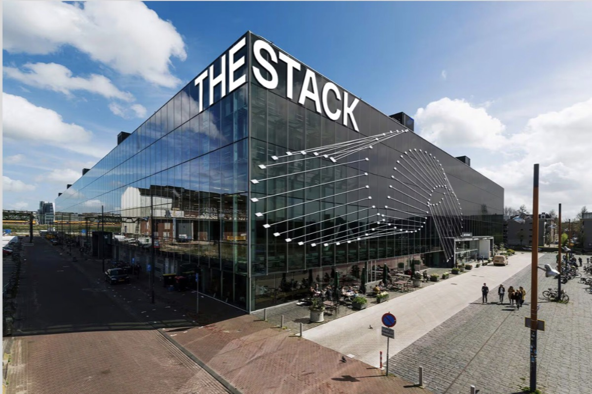

GDPR compliant
Customer data is processed in the EU and handled in line with GDPR.
Our managed infrastructure enables in-house teams and integrators to deploy AI that is really powerful while keeping company knowledge sovereign. European by design, for AI transformations that actually work.
Claude, ChatGPT, Copilot or Langdock are quickly implemented and bring advanced agentic capabilities. The gap to real impact is a focused strategy and organized change management. Together with a middle layer platform that makes outcomes robust and keeps knowledge secure and sovereign.
Assistants arrive one licence at a time. Nobody owns the outcome, no one can say what it returned, and the business case never gets written.
The knowledge an answer needs is spread across systems that were never meant to be read together, so every tool starts by rebuilding the same integrations.
Retrieval over loose documents returns something plausible for any question. Without structure behind it, an answer cannot be checked, only believed.
Content leaves for whichever model the tool ships with, under permissions the source system enforced and the assistant does not.
Teams can focus on strategy & change management — we make sure the technology is not the bottleneck and doesn’t push timelines or budget.
One knowledge base for people and agents, open over MCP: use the best of Claude, Copilot and ChatGPT, while the knowledge stays sovereign.
The complete product: knowledge base, web UI, and agents in Teams and Slack on European infrastructure, enabling to design the workflows that bring most impact.
Seamless solutions to complex infrastructure challenges, consumed as a service.
Customer data is processed in the EU and handled in line with GDPR.
Transparent AI interaction. No emotion recognition, no ranking of people, no individual-level analytics.
Certification underway; our security management system follows the standard today.
We are a pan-European team of AI Engineers based in Amsterdam and Berlin. recruiting@ascending.ai if you want to get in contact and discuss current job openings. We operate as an ecosystem.
Portrait of graphzero Founder & CEO Lennard Zwart and his ambitions with the company in Het Financieele Dagblad.
Opens fd.nl in a new tab
As part of the graphzero ecosystem we directly benefit from Aithos research on autonomy and pluralism in an age of increasingly powerful AI systems.
Opens aithos.org in a new tab
Also as part of the graphzero ecosystem we benefit from the network and ecosystem around Amsterdam’s new AI Hub “The Stack”.
Opens thestack.ai in a new tab